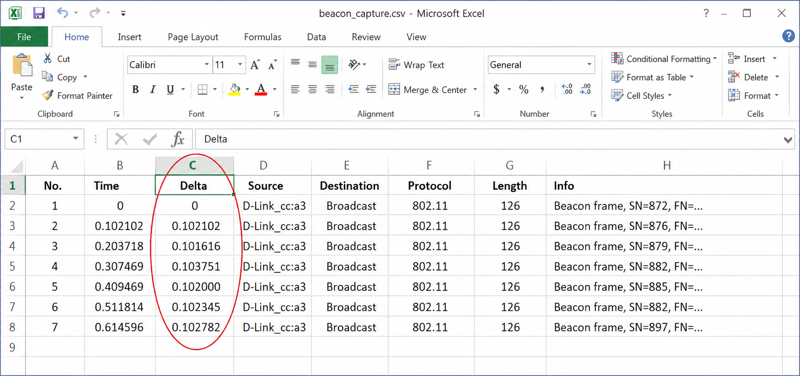
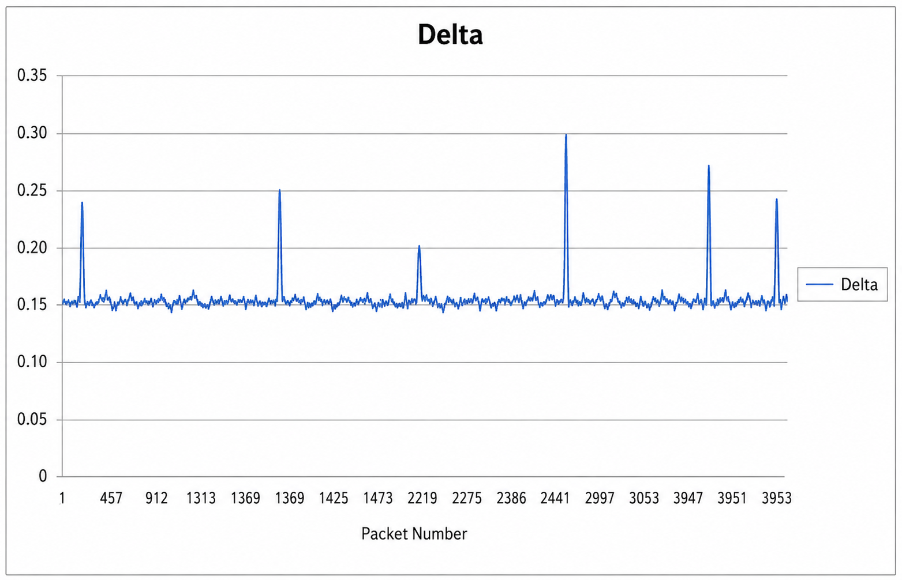
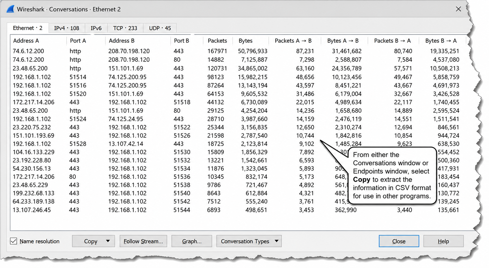

Packet and trace file annotations require the trace to be saved in pcap-ng format. What happens if you try to annotate a packet in a .pcap file and save it? And why is this limitation tied to the file format?
You can right-click the Packet Comment coloring rule name or string in the Packet Details pane to create a display filter. What filter would let you view only packets that have comments?
Annotate a Packet or an Entire Trace File
This feature changes the way we explain what's going on in a trace file — you can add comments about an entire trace file or individual packets right inside the trace file itself. Your trace file must be saved in pcap-ng format to retain annotations. When someone opens the pcap-ng file on another Wireshark system (version 1.7 or later), they will be able to read all embedded notes.
Two quick ways to add a comment to a packet:
- Select a packet and choose Edit | Edit or Add Packet Comment
- Right-click on the packet in the Packet List pane and select Edit or Add Packet Comment
Packet comments are shown above the Frame section in the Packet Details pane in a field called pkt_comment. Right-click and add this column to the Packet List pane to see which packets have comments. All packet comments are also listed under the Packet Comments tab in the Expert Infos window.
Figure 166 shows individual packet annotations, the Packet Comments column and the Expert Info Packet Comments tab. You can double-click on a comment in the Expert Info tab to open and edit it.

To add, edit or cancel a comment linked to the entire trace file, click on the Comment icon in the lower left corner of the Status Bar (next to the Expert Info button). This trace file comment is displayed in the trace file Summary window.

Wireshark offers five save options beyond "all packets." What are they, and which one would you use to isolate the packets from a single TCP conversation for sending to a vendor?
To save just a specific conversation's packets without manually selecting each one, what two-step process would you follow?
Save Filtered, Marked and Ranges of Packets
You can save a subset of packets based on filters and marked packets. Figure 168 shows the Save As window with these options: displayed packets only, selected packet, marked packets, first to last marked packets, or a range of packets. In this example, 4 marked packets and 102 packets match the display filter. Save in pcap-ng format to retain any trace file or packet comments.

Print Packets
Select File | Print to open the Print window (Figure 169). You can print the Packet List pane summary line, Packet Details (collapsed, as displayed, expanded) or the packet bytes. Same subset options apply: displayed packets, selected packets, marked packets or a range.

Figure 170 shows printing the Packet List summary line and Packet Details (as displayed). When printing the packet summary line, use landscape format to see as much information as possible. Consider printing to a text file (print.txt) to reformat data for better printing results.

File | Export Packet Dissections supports six output formats. Which format would you use to import Wireshark data into Excel for chart creation, and what column would you add before exporting to make a beacon interval graph?
The IO Graph Save button produces a graphic file (BMP, ICO, JPEG, PNG, TIFF) but without X-axis or Y-axis labels. When would exporting to CSV via the Copy button be more useful than saving the graphic?
Export Packet Content
Use File | Export Packet Dissections to create additional graphs, search for specific contents or perform advanced procedures on captured data. Packets can be exported in these formats:
- Plain text (*.txt)
- PostScript (*.ps)
- Comma Separated Values — Packet Summary (*.csv) — imports easily into spreadsheet programs
- C Arrays — Packet Bytes (*.c)
- PSML — XML Packet Summary (*.psml)
- PDML — XML Packet Details (*.pdml)
In the following example, the contents of a filtered trace file were exported to plot WLAN beacon rates. A profile column for delta time was added first, then all beacon packets were exported to CSV format.

The CSV file was then opened in Excel and the Delta Time column was selected to create a line graph (Figure 172, Figure 173). Other useful export scenarios: tcp.analysis.bytes_in_flight and wlan.analysis.retransmission statistics exported to CSV for trend analysis.


Export SSL Keys
Select File | Export SSL Keys to export the SSL session key. The exported file has a .key extension. This is useful for later decryption of recorded sessions.
Save Conversations, Endpoints and IO Graphs
In the Conversations, Endpoints or IO Graph windows, click the Copy button to save the data in CSV format (Figure 174). In the case of IO Graphs, only the plot point number and value are saved. IO Graphs also have a Save button that allows saving in BMP, ICO, JPEG, PNG or TIFF format — but without X or Y axis labels in the image file. Conversations and flow graphs are saved in ASCII text format.

Export Packet Bytes
To export packet bytes, select a field or byte(s) in the Packet Details or Packet Bytes pane. Right-click and select Export Selected Packet Bytes or press Ctrl+H. This exports in raw hex data format — no formatting. For example, right-click on the IP header in Packet Details and choose Export Selected Packet Bytes to export just the IP header of a packet.
Case Study
A customer was having intermittent problems with connections to a database server used by their personnel department. Sometimes connections worked fine — other times users couldn't get a connection at all.
Because the problem was intermittent, Wireshark was set up off a tap between four personnel department members and the switch. Wireshark was configured to capture traffic to a file set at 30MB maximum with a capture filter for all traffic to the database server (host 10.3.3.4).
Users were given an "Ouch" icon on their desktops to launch a ping to the database server whenever they experienced a problem. When the traces came back, the ICMP ping packets (icmp.type==8) were filtered and marked as location markers in the trace file — regardless of whether the database server responded. Ctrl+Shift+N allowed skipping from one problem point to the next.
In each instance, users were trying to access the same file and the server simply did not respond — it sent a TCP ACK indicating it received the request, but did not send the requested file. The Time column showed delays averaging 23 seconds!
After research and ultimately contacting the vendor, the response came: there was an "anomaly" in their program that limited the number of times the file could be accessed in a short period. If more than a certain number of users tried to access the file, the program would discard the request.
Wireshark showed exactly where the problem was. It didn't tell us why, but it saved the IT staff days of troubleshooting, indicated the network was not at fault, validated users' claims and helped management avoid spending money on equipment that would not have solved the problem.

Trace files and individual packets can be annotated in newer versions of Wireshark. File annotations are visible in the Summary window while individual packet comments can be located quickly through the Expert Infos window's Packet Comments tab. Trace files must be saved in pcap-ng format to retain annotations.
Wireshark offers numerous methods for saving packets, conversations, graphs and even bytes from a single packet. To separate a trace file into smaller parts, you can save just the filtered packets, just the marked packets or even a range of packets. You can also export packet or file contents for manipulation in other programs. Many of the statistics windows also offer the Save or Copy feature for CSV export.
Review Questions
Open the Expert Infos window and select the Packet Comments tab.
When you select File | Export Specified Packets, you can choose to save: displayed packets, selected packets, marked packets, first to last marked packets, or a packet range.
Comma Separated Value (CSV) format imports easily into spreadsheet programs. Use File | Export Packet Dissections | as "CSV".
Expand the TCP header in a packet and choose File | Export Packet Dissections and select as "Plain Text" file. Select Packet Details: As displayed in the Packet Format section.